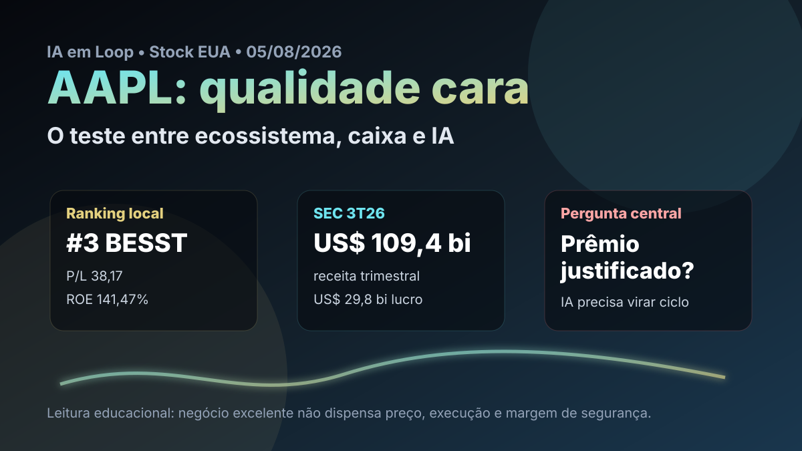

05/08: AAPL, Apple e o teste da IA no valuation
AAPL aparece na watchlist permanente e em 3º lugar no ranking BESST & Buffett EUA do IA em Loop. A pergunta central é simples: o ecossistema da Apple e sua geração de caixa ainda justificam pagar múltiplo alto enquanto o mercado cobra provas mais claras em inteligência artificial?

Apple segue sendo uma das empresas de maior qualidade do mercado americano; o ponto sensível é se o preço já cobra uma execução perfeita em serviços, recompra de ações e inteligência artificial.
Resposta curta: empresa excepcional, margem de segurança apertada
Apple é um caso raro de marca global, base instalada fiel, serviços recorrentes, cadeia de hardware em escala e capacidade de transformar lucro em caixa. No arquivo local de rankings com data-base de 11/07/2026, AAPL aparece em 3º lugar no BESST & Buffett EUA, com score de 58,4, P/L de 38,17, EV/EBITDA de 29,05, ROE de 141,47% e dividend yield de 0,34%.
Essa combinação explica por que AAPL pertence à watchlist: qualidade, perenidade e escala são evidentes. Mas o valuation também é exigente. A cotação consultada em 05/08/2026 ficou perto de US$ 308,95, com faixa de 52 semanas entre US$ 205,59 e US$ 344,57. Ou seja: não é uma tese de empresa quebrada; é uma tese de qualidade negociando com prêmio.
O que os dados verificados mostram
A consulta pública à SEC no CIK 0000320193 mostra que a Apple arquivou 10-Q em 31/07/2026, referente ao trimestre encerrado em 27/06/2026. No 3T26, a empresa registrou US$ 109,417 bilhões de receita e US$ 29,789 bilhões de lucro líquido. No acumulado de nove meses do ano fiscal de 2026, foram US$ 364,357 bilhões de receita e US$ 101,464 bilhões de lucro líquido.
O caixa operacional acumulado em nove meses foi de US$ 116,996 bilhões, contra US$ 6,799 bilhões em capex. Isso reforça a principal virtude da tese: o negócio gera caixa em volume muito acima do investimento físico necessário. No balanço de 27/06/2026, a Apple tinha US$ 383,266 bilhões em ativos, US$ 39,544 bilhões em caixa e equivalentes e US$ 107,520 bilhões de patrimônio líquido.
O dado que conecta Apple à discussão atual é investimento em produto e tecnologia. A SEC registra US$ 34,035 bilhões em pesquisa e desenvolvimento no acumulado de nove meses de 2026, incluindo US$ 11,729 bilhões no 3T26. O mercado não está apenas comprando iPhone; está cobrando que esse investimento sustente serviços, chips, dispositivos e recursos de inteligência artificial.
| Métrica verificada | Fonte/período | Valor | Leitura |
|---|---|---|---|
| Receita trimestral | SEC 10-Q 3T26 | US$ 109,417 bi | escala operacional muito alta |
| Lucro líquido trimestral | SEC 10-Q 3T26 | US$ 29,789 bi | margem robusta em empresa madura |
| Caixa operacional | SEC 9M26 | US$ 116,996 bi | conversão de lucro em caixa segue forte |
| Capex | SEC 9M26 | US$ 6,799 bi | modelo relativamente leve para a escala |
| Pesquisa e desenvolvimento | SEC 9M26 | US$ 34,035 bi | aposta relevante em inovação e IA |
Por que AAPL importa para a watchlist
AAPL é importante porque separa duas ideias que o investidor costuma misturar: empresa excelente e preço excelente. A Apple pode continuar sendo um dos melhores negócios do mundo e, ao mesmo tempo, não oferecer margem de segurança confortável se o mercado já estiver precificando crescimento, recompra, serviços e inteligência artificial como certezas.
Na prática, a tese não depende de um único lançamento. Ela depende de a base instalada continuar comprando hardware, assinando serviços, aceitando preços premium e percebendo valor nos recursos de IA. Se a IA virar apenas custo defensivo para manter o iPhone competitivo, o múltiplo fica mais vulnerável. Se virar motor de upgrade, serviços e retenção, o prêmio ganha sustentação.
AAPL merece lugar na watchlist pela qualidade e pela geração de caixa, mas não parece uma barganha óbvia. O acompanhamento deve focar em três gatilhos: crescimento de serviços, sinais de ciclo de troca do iPhone e evidência de que inteligência artificial aumenta receita ou retenção, não apenas despesa.
O que favorece e o que ameaça a tese
Favoráveis
• Marca global e base instalada com alto custo de troca.
• Caixa operacional de quase US$ 117 bilhões em nove meses.
• Serviços e ecossistema reduzem dependência de uma única venda de hardware.
• Retorno sobre patrimônio muito alto no ranking local.
• Recompras podem ampliar lucro por ação quando feitas a preços racionais.
Desfavoráveis
• P/L acima de 38 reduz margem de segurança.
• Valuation depende de crescimento e execução em IA.
• iPhone ainda é peça central da percepção de ciclo.
• Regulação, App Store e China seguem como riscos estruturais.
• Dividend yield baixo torna o retorno mais dependente de valorização.
Checklist para acompanhar daqui em diante
| Ponto | O que monitorar | Se piorar |
|---|---|---|
| Serviços | crescimento, margem e assinaturas | o ecossistema perde parte do prêmio |
| iPhone | unidades, preço médio e ciclo de troca | o lucro fica mais dependente de recompra |
| IA | adoção prática em aparelhos e serviços | investimento vira custo defensivo |
| Valuation | P/L, EV/EBITDA e queda frente ao topo | entrada sem margem aumenta assimetria negativa |
| Regulação | App Store, privacidade e mercados internacionais | margens de serviços podem ser pressionadas |
Conclusão
A resposta para a pergunta do post é equilibrada: a qualidade da Apple justifica prêmio, mas não qualquer preço. O caixa, a marca e a base instalada sustentam a presença na watchlist. O risco é pagar por uma aceleração em IA e serviços antes de ela aparecer com clareza nos números.
A leitura de hoje é: AAPL é candidata de acompanhamento, não compra automática. Para ficar mais atraente, precisa de uma das duas coisas: preço mais conservador ou evidência mais forte de que IA e serviços vão ampliar crescimento, margem e retenção nos próximos trimestres.